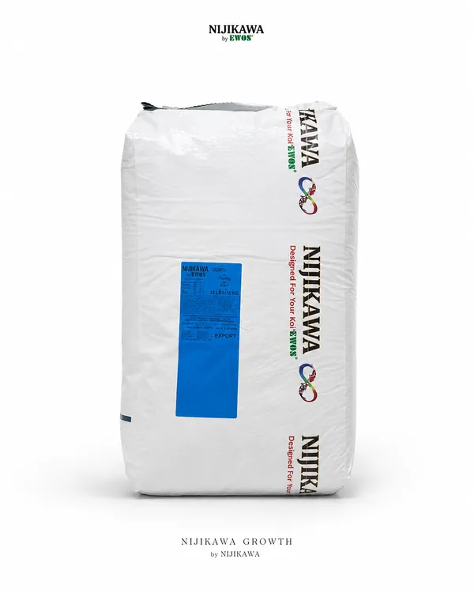
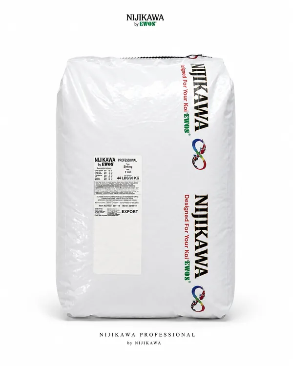
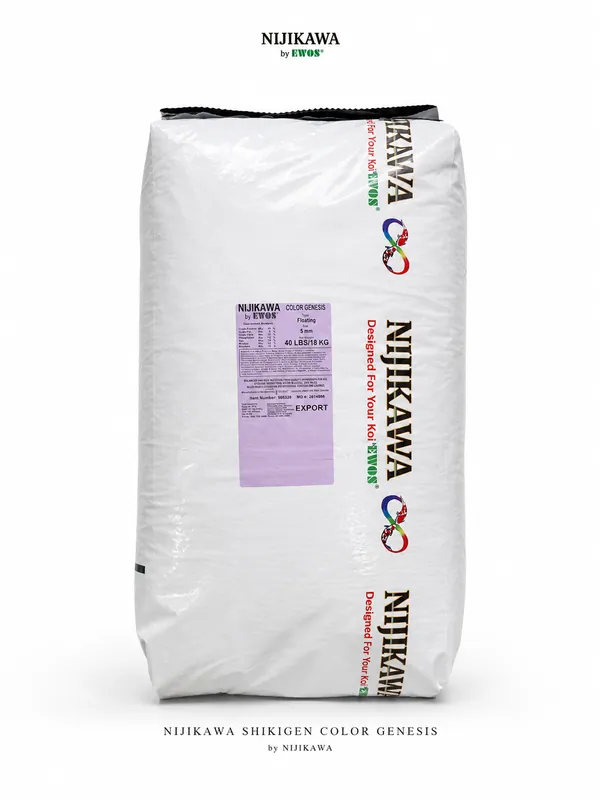

FOTO BREEDER / FARM
BREEDER JEPANG
Profil breeder
Foto, nama farm, lokasi, dan lini Nijikawa yang digunakan akan ditampilkan di sini.
PROFIL SEGERA DITAMBAHKANPREMIUM KOI FEED
Kenali Nijikawa dan pilihan pakannya untuk kebutuhan koi Paman—dari pertumbuhan hingga perawatan sehari-hari.

KEPERCAYAAN DARI JEPANG
Nijikawa telah digunakan oleh berbagai breeder di Jepang. Kenali mereka melalui profil, foto, dan cerita penggunaan Nijikawa di farm masing-masing.
Foto, nama farm, lokasi, dan lini Nijikawa yang digunakan akan ditampilkan di sini.
PROFIL SEGERA DITAMBAHKANFoto, nama farm, lokasi, dan lini Nijikawa yang digunakan akan ditampilkan di sini.
PROFIL SEGERA DITAMBAHKANFoto, nama farm, lokasi, dan lini Nijikawa yang digunakan akan ditampilkan di sini.
PROFIL SEGERA DITAMBAHKANProfil dan foto breeder akan dilengkapi berdasarkan materi yang disetujui untuk ditampilkan.
PENDEKATAN NIJIKAWA
Nilai sebuah pakan tak hanya ditentukan oleh jumlah yang dimakan. Koi membutuhkan protein dan energi yang seimbang; pakan juga perlu dicerna dan dimanfaatkan dengan baik, sementara pelet perlu tetap stabil selama berada di air. Karena itu, pendekatan formula Nijikawa melihat kebutuhan koi dan kolam sebagai satu rangkaian.
Pelet yang menarik membantu koi mau makan. Setelah itu, pencernaan dan penyerapan berperan dalam pemanfaatan nutrisi. Porsi pemberian, kondisi air, dan kerja filtrasi tetap ikut menentukan keseimbangan kolam.
Asam amino esensial menjadi bagian dari bahan pembentuk jaringan tubuh. Bersama energi dari lemak, profil nutrisi ini ditujukan untuk mendukung pemeliharaan tubuh, pertumbuhan otot, dan konformasi koi. Hasilnya juga dipengaruhi genetik, suhu, kualitas air, serta porsi pakan.
Prebiosal dan probiotik mendukung lingkungan pencernaan koi. Bahan yang mudah dicerna membantu tubuh memanfaatkan nutrisi dengan lebih baik dan dapat membantu mengurangi sisa pakan—dengan catatan jumlah serta waktu pemberian tetap disesuaikan.
Expanded Pellet Technology (EPT) membantu pelet tetap utuh lebih lama saat berada di air. Pelet yang tidak cepat terurai memberi kesempatan koi untuk memakannya; kualitas air tetap perlu dijaga melalui porsi tepat, sirkulasi, dan filtrasi yang baik.
Nukleotida, vitamin C, E, serta B12 yang distabilkan melengkapi campuran vitamin dan mineral dalam formula. Komponen ini menjadi bagian dari dukungan nutrisi harian koi; ikuti petunjuk pemberian pada kemasan.
Formula mencantumkan bahan NON-GMO dan tidak menggunakan protein gluten dari kedelai atau jagung. Pemilihan bahan dan daya tarik pakan bagi koi menjadi bagian dari upaya menghadirkan nutrisi yang mudah diterima.
Formula pakan hanyalah satu bagian dari pemeliharaan. Sesuaikan porsi dengan suhu, nafsu makan koi, kondisi air, dan kemampuan filtrasi kolam.
PILIHAN NIJIKAWA
Setiap koi punya kebutuhan berbeda. Kenali karakter tiap lini—dari tujuan pemberian, bentuk pelet, hingga kandungan nutrisinya—agar Paman lebih mudah memilih pakan yang sesuai dengan kondisi dan target pemeliharaan.

FLOATING PELLETUNTUK PERTUMBUHAN DAN KONFORMASI
Growth dirancang untuk mendukung pertumbuhan koi dengan matriks asam amino dan rasio energi-protein yang seimbang.
5 mm: 7 kg dan 18 kg. 7 mm: 18 kg. Fosfor minimum 1,1%; natrium maksimum 0,5%. Bahan utama yang tercantum meliputi fish meal, poultry meal, gandum, kacang polong, dried beans, fish oil, premiks vitamin-mineral, asam amino, yeast extract, dan astaxanthin.

SINKING PELLETUNTUK PEMBERIAN PAKAN TENGGELAM
Professional menggunakan pelet tenggelam dengan formula nutrisi yang menekankan keseimbangan energi-protein, kualitas tubuh, dan daya cerna.
Ukuran 5 mm dan 7 mm tersedia dalam kemasan 10 kg dan 20 kg pada katalog USA. Fosfor 1,1%; natrium maksimum 0,5%. Bahan utama yang tercantum meliputi fish meal, gandum, poultry meal, kacang polong, dried beans, fish oil, premiks vitamin-mineral, yeast extract, asam amino, dan astaxanthin.

FLOATING PELLETUNTUK DUKUNGAN WARNA DAN KUALITAS KULIT
Dikembangkan berdasarkan pendekatan nutrisi untuk mendukung warna alami koi dan kualitas kulitnya—tanpa menjanjikan perubahan warna yang sama pada setiap ikan.
Tenggelam 5 mm: 10 kg dan 20 kg. Apung 7 mm: 18 kg pada katalog USA. Fosfor 1,1%; natrium maksimum 0,5%. Bahan utama yang tercantum meliputi gandum, fish meal, poultry meal, kacang polong, dried beans, fish oil, premiks vitamin-mineral, yeast extract, asam amino, dan astaxanthin.
Ukuran, komposisi, dan spesifikasi dapat berbeda menurut produk yang beredar. Jadikan informasi pada kemasan sebagai acuan utama, atau konfirmasikan kepada distributor untuk mengetahui ketersediaan di Indonesia.
PANDUAN MEMILIH
Pakan adalah satu bagian dari pemeliharaan. Pertimbangkan juga kondisi koi, suhu, kualitas air, dan kemampuan filtrasi kolam.
Pertumbuhan, pemeliharaan rutin, atau perhatian pada penampilan koi.
Sesuaikan pemberian pakan dengan suhu, kualitas air, dan respons koi.
Gunakan panduan pada kemasan dan tanyakan ketersediaan produk resmi.
JAPANESE BREEDER FEEDING PROTOCOL
Unduh ebook Japanese Breeder Feeding Protocol untuk mengenal pendekatan feeding koi ala breeder Jepang.